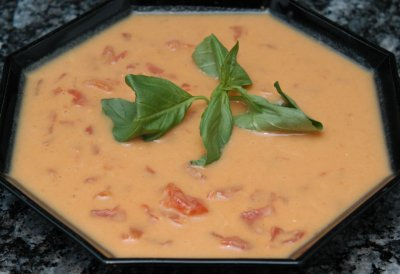

| Zutaten für 8: | |
| 1 | Zwiebel |
| 2 El | Sonnenblumenöl |
| 1 El | Currypulver |
| 1 | Knoblauchzehe |
| 1 kg | Kürbis |
| 5 Becher | Bouillon |
| 1/2 - 1 Becher | Buttermilch (falls kalt) oder Kokosnussmilch (falls heiss) |
| 1 Büchse | Tomatenpelati (410 g) |
| Salz und Pfeffer | |
Zwiebel hacken
Kürbis schälen und in gleichmässig grosse Würfel schneiden.
Knoblauchzehe schälen.
Zwiebel im Öl mit ein wenig Salz weich dünsten aber nicht bräunen. Falls nötig etwas Wasser beigeben.
Currypulver dazu geben und Knoblauch dazu pressen. Dann die Kürbiswürfel beigeben und 10 Minuten kochen lassen.
Bouillon dazu giessen und 30 Minuten kochen lassen, bis der Kürbis weich ist.
Mit dem Handmixer pürieren.
Falls die Suppe kalt serviert wird genug Buttermilch beigeben bis eine sämige Konsistenz erreicht ist. Pelati zufügen aber nicht pürieren. Allenfalls würzen und kalt stellen
Falls die Suppe heiss serviert wird, die Kokosnussmilch einrühren und die Pelati beigeben ohne zu pürieren.
Die Suppe mit Korianderblättern verzieren und mit Garam Masala besprenkeln.
Cape Town Food, Page 84, gratefuly received by Sandra from Valerie.
A lovely soup! RE. 5.5.2004.
@LINKBACK_TAG@ @WAKELOCK@